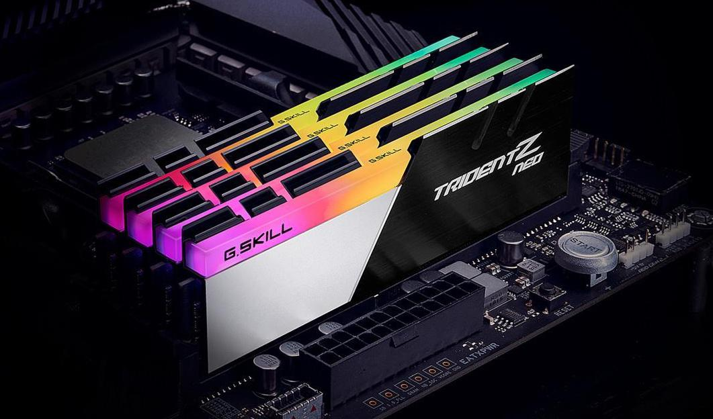
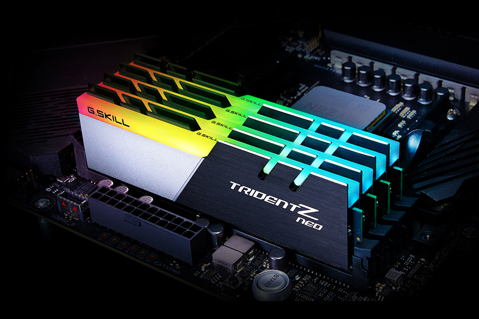

Arbeidsminne(RAM) er en essensiell komponent i enhver pc. Arbeidsminnet kommer i mange farger og fasonger og mange varierende størrelser. Arbeidsminnet, også kjent som RAM (Random access memory), er i all hovedsak et midlertidig stopp for pcens konstante inntak av bits (enere og nullere). RAMen kverner seg igjennom massive mengder av bits gjennom hele pcen's oppetid, og det er RAMens oppgave å holde maskineriet raskt og responsivt.
Arbeidsminnet eller primærminnet i pcen er hovedsakelig der for å kunne laste opp og vise essensielle program ved oppstart av maskinen. All informasjon som går igjennom RAMen blir hentet opp hyppig og senere lagret i sekundærminnet (lagringsmediumene). Men, skulle strømmen til maskinen under noen av RAMens prosessor skru seg av,vil alt av lagring som ikke er flyttet over til sekundærminnet gå tapt. Dette er et av de store forskjellende mellom RAM og SSD.
 Dette er bilder av flere RAM-brikker i et hovedkort.